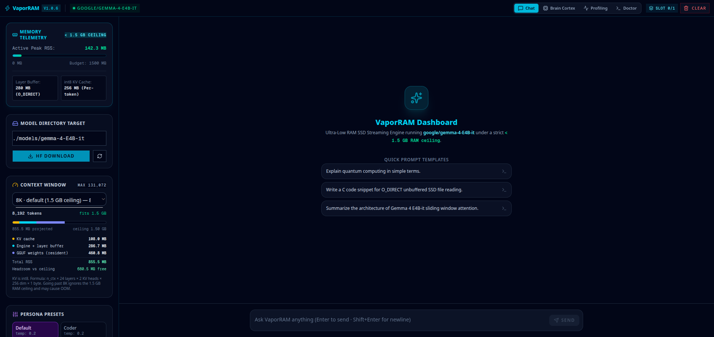

VaporRAM is a high-performance C/C++ engine engineered to stream dense 8B model layers sequentially from NVMe SSDs directly into RAM, achieving lightning fast local inference on consumer hardware.

Empirical optimization for low-spec laptops and serverless deployments.
Streams 32 dense transformer layers using POSIX unbuffered O_DIRECT reads with asynchronous posix_fadvise kernel hints, maintaining constant RAM usage.
Hand-crafted FMA3 matrix-vector kernels multi-threaded with OpenMP to achieve 7.70x speedup over scalar CPU computation.
Attention Key and Value states are dynamically quantized to int8 with per-token scale factors, reducing context RAM overhead to less than 250 MB.
Deploy in seconds with Python or run as a standalone C runtime.